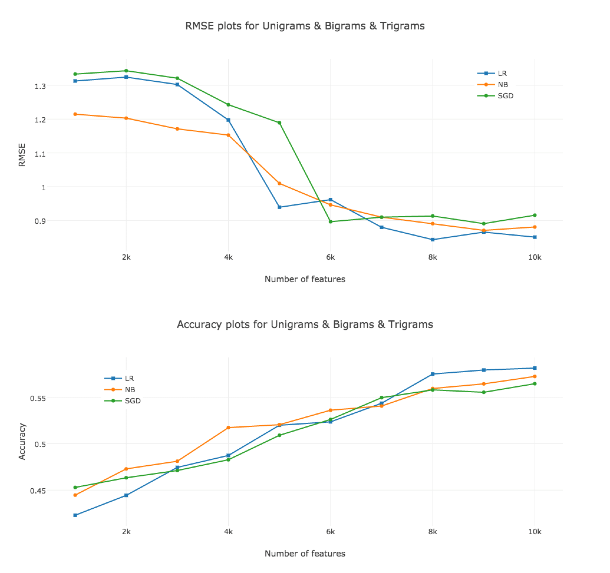

This was originally a final project of the class INF 385T Applied Data Mining taught by Byron Wallace at UT Austin. My teammate is Haowei Sun.
Today, customer reviews in social media have a deep impact on the chances of success of any business. On Yelp, many businesses receive tens of hundreds of reviews, making it impossible for users to read all of them. Generally, users prefer to look at the star ratings only and ignore the text. However, the relationship between the text and the rating is not obvious. For example, a customer writes a text review “I’ve been to X a bunch of times. I’m not a huge fan of Mexican food, but there is lots of variety here. The place is really small though, so you almost never find a spot to sit and eat. The service is also slow sometimes.” and he/she gives the restaurant 3/5 stars. Several questions may be asked: why exactly did this reviewer give the restaurant 3 stars? What features of the restaurant did the user implicitly consider and what the relative importance of a given feature? How does this relationship change if we consider a different user’s review and rating? These problems can be solved by predicting a user’s star rating for a business given the user’s star rating for that business, which is called review rating prediction.
In this project, we treated review rating prediction problem as a multi-class classification problem, where the class labels are the star ratings. We combined three feature extraction methods, unigrams, bigrams, and trigrams, with three supervised learning algorithms, logistic regression, Naive Bayes classification, Stochastic Gradient Descent (SGD) classification to build nine prediction models. We trained and evaluated the performance of each of these models on the dataset provided by Yelp.
In this paper, we tackle the review rating prediction problems for restaurant reviews on Yelp. We treat it as a 5-class classification problem, and examine various feature extraction and supervised learning methods to construct nine prediction systems. Logistic regression on the set of top 10,000 features obtained from unigrams and bigrams exhibits better predictive powers than the others.

Since logistic regression and SGD are both discriminative model, they are based on conditional probability. Naive Bayse is a generative model and it is based on joint probability. Commonly, discriminative model performs better since it is more like a target model. However, we find that in Google and other companies most of them prefer to use generative models like Naive Bayse, which are simpler and don’t have many parameters. Discriminative models usually have a better performance, but are more complex depending on the tuning of parameters.